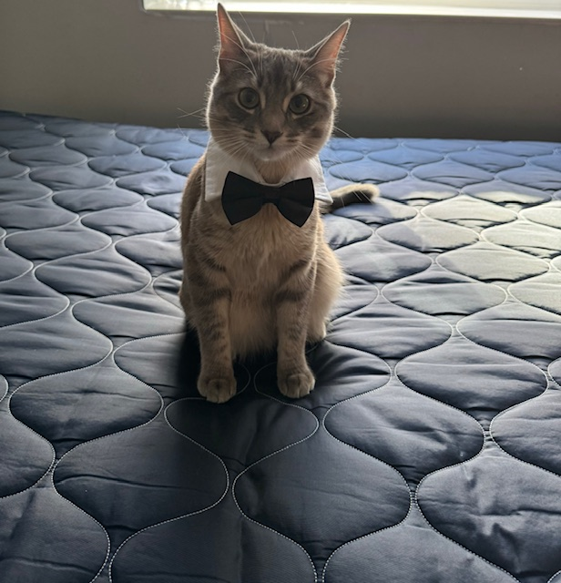
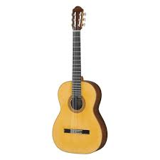

All About Me
Hello everyone my name is Randy Rice I am a Junior at Kennesaw State University. I major in Information Technology and a concentration in Cyber Security. My time at Kennesaw State University was interesting. I live off campus. I meet new people and tried different activities that I couldn't do in Conyers where I used to live.
I tried mountain biking for the first time and that did not end so well for my legs. My hobbies are playing games, building modeling kits, and practicing the guitar. I also have a pet cat, and his name is Chrome aka the Ankle biter because he likes to sneak or do drive-bys jumping at my feet. I had Chrome for 9 months but he is 11 months old since I got him when he was 2 months.

